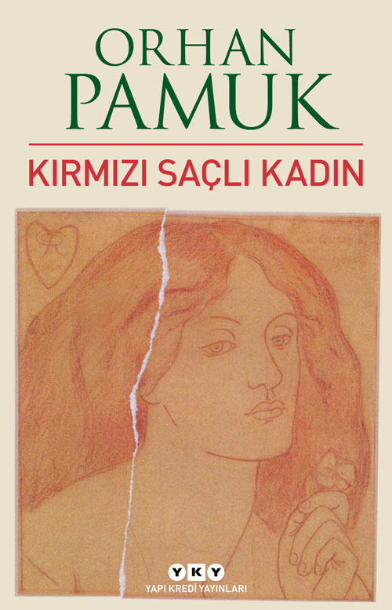

Kırmızı Saçlı Kadın
İlk aşk deneyimi bütün bir hayatı belirler mi?
Yoksa kaderimizi çizen yalnızca tarihin ve efsanelerin gücü müdür?
Orhan Pamuk, Yapı Kredi Yayınları’ndan çıkan yeni romanı “Kırmızı Saçlı Kadın”da bizi otuz yıl önce
İstanbul yakınlarındaki bir kasabada liseli bir gencin yaşadığı sarsıcı bir aşk hikâyesiyle, büyük
bir insani suçun peşinden sürüklüyor.
Fiyat: $19.99